전자계산기조직응용기사 (2013-03-10 기출문제)
1과목: 전자계산기 프로그래밍
1. C언어의 기억 클래스(Storage Class) 종류에 해당하지 않는 것은?
- auto
- internal
- static
- register
(정답률: 68%)

2. 프로그램 내에서 양쪽 오퍼랜드에 기억된 내용을 바꾸어야 할 때 사용하는 어셈블리어 명령은?
- XCHG
- EJECT
- INC
- DEC
(정답률: 72%)
3. 어셈블리어에서 어떤 기호적 이름에 상수 값을 할당하는 명령은?
- EQU
- ASSUME
- ORG
- EVEN
(정답률: 71%)
4. 하나 이상의 유사한 객체들을 묶어 하나의 공통된 속성을 표현한 것으로 자료 추상화의 개념으로 볼 수 있는 것은?
- Class
- Message
- Instance
- Method
(정답률: 76%)
5. 수명 시간동안 고정된 하나의 값과 이름을 가진 자료로서 프로그램이 작동하는 동안 값이 절대로 바뀌지 않는 것을 의미하는 것은?
- 함수
- 포인터
- 변수
- 상수
(정답률: 75%)
6. 객체지향 기법에서 메시지의 전달은 어떻게 이루어지는가?
- 어트리뷰트에서 어트리뷰트로
- 오브젝트에서 어트리뷰트로
- 클래스에서 데이터로
- 오브젝트에서 오브젝트로
(정답률: 63%)
7. 어셈블리어에서 라이브러리에 기억된 내용을 프로시저로 정의하여 서브루틴으로 사용하는 것과 같이 사용할 수 있도록 그 내용을 현재의 프로그램 내에 포함시켜 주는 명령은?
- TITLE
- EVEN
- INCLUDE
- ORG
(정답률: 72%)
8. C 언어에서 문자열 입력 함수는?
- putchar()
- puts()
- getchar()
- gets()
(정답률: 61%)
9. 작성된 표현식이 BNF의 정의에 의해 바르게 작성되었는지를 확인하기 위하여 만든 트리는?
- parse tree
- menu tree
- king tree
- home tree
(정답률: 76%)
10. C 언어에서 사용되는 반복 구조문이 아닌 것은?
- while 문
- do ~ while 문
- for 문
- if ~ else 문
(정답률: 77%)
11. 객체지향 기법에서 어떤 클래스에 속하는 구체적인 객체를 의미하는 것은?
- Information Hiding
- Encapsulation
- Integration
- Instance
(정답률: 64%)
12. 람바우 모델링에서 상태도 및 자료 흐름도와 각각 관계되는 모델링은?
- 상태도 - 기능모델링, 자료 흐름도 - 동적모델링
- 상태도 - 동적모델링, 자료 흐름도 - 기능모델링
- 상태도 - 객체모델링, 자료 흐름도 - 동적모델링
- 상태도 - 객체모델링, 자료 흐름도 - 기능모델링
(정답률: 62%)
13. 프로그래밍 언어의 해독 순서로 옳은 것은?
- 컴파일러 → 로더 → 링커
- 링커 → 로더 → 컴파일러
- 로더 → 컴파일러 → 링커
- 컴파일러 → 링커 → 로더
(정답률: 64%)
14. 원시프로그램을 번역할 때 어셈블러에게 요구되는 동작을 지시하는 명령으로서 기계어로 번역되지 않는 명령어를 무엇이라고 하는가?
- 오퍼랜드 명령(operand instruction)
- 기계어 명령(machine instruction)
- 매크로 명령(macro instruction)
- 의사 명령(pseudo instruction)
(정답률: 72%)
15. C 언어에서 문자형 자료 선언시 사용하는 것은?
- double
- float
- char
- int
(정답률: 72%)
16. 어셈블리어에 대한 설명으로 옳지 않은 것은?
- 기억장치의 제어가 가능하다.
- 최적의 실행시간을 고려한 프로그램 작성이 가능하다.
- 오류 검증이 용이하며 호환성이 우수하다.
- 기호를 정하여 명령어와 데이터를 기술한다.
(정답률: 63%)
17. 객체지향 언어에서 캡슐화에 대한 설명으로 거리가 먼 것은?
- 변경시의 부작용을 방지한다.
- 객체 간에 결합도를 낮춘다.
- 프로그래밍 생산성을 낮춘다.
- 객체의 응집도를 높인다.
(정답률: 72%)
18. C 언어에서 이스케이프 문자의 의미가 옳지 않은 것은?
- \r : carriage return
- \f : new line
- \b : backspace
- \t : tab
(정답률: 79%)
19. 고급언어로 작성한 프로그램을 기계어로 번역하였다. 번역 도중에 발생한 문법에러를 모두 수정하여 실행 파일을 만들었으나 실행 결과가 정확하지 않았다. 어떤 프로그램을 이용하면 논리적인 문제점을 검토할 수 있는가?
- 운영체제(operating system)
- 어셈블러(assembler)
- 디버거(debugger)
- 링커(linker)
(정답률: 75%)
20. 시스템이 알고 있는 특수한 기능을 수행하도록 이미 용도가 정해져 있는 단어로써, 프로그래머가 변수 이름이나 다른 목적으로 사용할 수 없는 핵심어를 무엇이라고 하는가?
- Constant
- Variable
- Reserved Word
- Array
(정답률: 69%)
2과목: 자료구조 및 데이터통신
21. 비동기 전송에서 한문자의 전송과 그 다음 문자의 전송에 대한 구별을 어떻게 하는가?
- 문자 처음과 끝에 Block pattern(01111110)을 추가하여 구분한다.
- 문자 앞에 (01101101)코드를 추가하여 구분한다.
- 문자와 문자 사이에 (11111111)코드를 추가하여 구분한다.
- 각 문자코드의 맨 앞에는 시작비트를 두고, 문자코드 맨 뒤에는 정지비트를 두어 구분한다.
(정답률: 72%)
22. 다음이 설명하고 있는 데이터 링크 제어 프로토콜은?
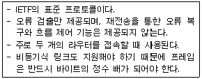
- HDLC
- PPP
- LAPB
- LLC
(정답률: 44%)
23. HDLC 프레임 구성에서 프레임 검사 시퀀스(FCS) 영역의 기능으로 옳은 것은?
- 전송 오류 검출
- 데이터 처리
- 주소 인식
- 정보 저장
(정답률: 61%)
24. PCM(Pulse Code Modulation)에 대한 설명으로 옳지 않은 것은?
- PCM은 음성 정보와 같은 아날로그 정보를 디지털 신호로 변환하기 위해 널리 사용되는 방식이다.
- 입력 아날로그 데이터를 일정한 주기마다 표본화하여 PAM(Pulse Amplitude Modulation) 펄스로 만든다.
- Frequency Modulation을 사용하여 변조한다.
- 300~3400Hz 범위에 대부분의 주파수 성분을 가지는 음성 정보의 경우, 표본화 주파수를 8000Hz로 하면 원래의 음성 정보를 손실 없이 유지할 수 있다.
(정답률: 52%)
25. TCP/IP 관련 프로토콜 중 응용계층에 해당하는 것은?
- ARP
- ICMP
- UDP
- HTTP
(정답률: 61%)
26. 아날로그 데이터를 디지털 신호로 변환하는 것은?
- PCM(Pulse Code Modulation)
- AM(Amplitude Modulation)
- PSK(Phase Shift Keying)
- FDM(Frequency Division Multiplexing)
(정답률: 64%)
27. HDLC 전송 제어 절차의 세 가지 동작 모드에 해당하지 않는 것은?
- Synchronous Response Mode
- Nomal Response Mode
- Asynchronous Response Mode
- Asynchronous Balanced Mode
(정답률: 44%)
28. 다음 설명에 해당하는 오류 검출 기법은?
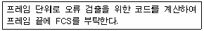
- Parity Check
- Cyclic Redundancy Check
- Hamming Coding
- Block Sum Check
(정답률: 54%)
29. 다중화(Multiplexing)에 대한 설명으로 옳지 않은 것은?
- 다중화란 효율적인 전송을 위하여 넓은 대역폭을 가진 하나의 전송링크를 통해 여러 신호를 동시에 실어 보내는 기술을 말한다.
- 동기식 시분할 다중화는 전송시간을 일정한 간격의 슬롯(time slot)으로 나누고, 이를 주기적으로 각 채널에 할당한다.
- 주파수 분할 다중화는 여러 신호를 전송 매체의 서로 다른 주파수 대역을 이용하여 동시에 전송하는 기술을 말한다.
- 파장 분할 다중화는 각 채널별로 특정한 시간 슬롯이 할당되지 않고 전송할 데이터가 있는 채널만 시간 슬롯을 이용하여 데이터를 전송한다.
(정답률: 60%)
30. 다음 설명에 해당하는 통신 서비스 망은?
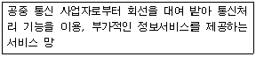
- Value Area Network
- Wide Area Network
- Metropolitan Area Network
- Local Area Network
(정답률: 57%)
31. 다음 트리를 후위 순회(Post-Order Traversal)한 결과는?
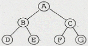
- A B C D E F G
- B D E A C F G
- D E B A F G C
- D E B F G C A
(정답률: 64%)
32. 다음 그림에서 “트리의 차수(Degree)”는?
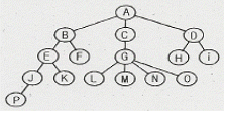
- 2
- 3
- 4
- 5
(정답률: 75%)
33. DBMS의 필수 기능이 아닌 것은?
- 데이터 조작(Data Manipulation)
- 데이터 변경(Data Modification)
- 데이터 정의(Data Definition)
- 데이터 제어(Data Control)
(정답률: 68%)
34. 해싱 함수의 값을 구한 결과 두 개의 키 값이 동일한 값을 가지는 경우를 무엇이라고 하는가?
- Clustering
- Overflow
- Relation
- Collision
(정답률: 74%)
35. 데이터베이스의 특성으로 옳지 않은 것은?
- 동시 공유(Concurrent Sharing)
- 주소에 의한 참조(Location Reference)
- 계속적인 변화(Continuous Evolution)
- 실시간 접근성(Real-Time Accessibility)
(정답률: 67%)
36. 다음 자료에 대하여 삽입 정렬을 사용하여 오름차순으로 정렬할 경우 Pass 2의 결과는?
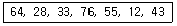
- 28, 33, 64, 76, 55, 12, 43
- 28, 64, 33, 76, 55, 12, 43
- 12, 28, 64, 33, 76, 55, 43
- 12, 28, 33, 55, 64, 76, 43
(정답률: 63%)
37. 스택의 응용 분야가 아닌 것은?
- 함수 호출의 순서 제어
- 운영체제의 작업 스케줄링
- 후위표기법으로 표현된 수식의 연산
- 부프로그램 호출시 복귀주소 저장
(정답률: 61%)
38. 데이터베이스의 3층 스키마에 해당하지 않는 것은?
- 관계 스키마
- 개념 스키마
- 외부 스키마
- 내부 스키마
(정답률: 70%)
39. 선형 구조에 해당하는 자료 구조만으로 나열된 것은?
- 리스트, 스택, 큐, 트리
- 리스트, 스택, 큐
- 리스트, 스택, 트리
- 스택, 큐, 트리
(정답률: 68%)
40. 데이터베이스 설계 순서로 옳은 것은?
- 개념적설계 → 논리적설계 → 물리적설계
- 논리적설계 → 물리적설계 → 개념적설계
- 물리적설계 → 개념적설계 → 논리적설계
- 개념적설계 → 물리적설계 → 논리적설계
(정답률: 73%)
3과목: 전자계산기구조
41. 중앙연산 처리장치에서 micro-operation 이 실행되도록 하는 것은?
- 스위치(switch)
- 레지스터(register)
- 누산기(accumulator)
- 제어신호(control signal)
(정답률: 52%)
42. RAM에 관한 설명 중 틀린 것은?
- DRAM은 캐패시터에 전하를 저장하는 방식으로 데이터를 저장한다.
- SRAM은 플립플롭을 사용해 데이터를 저장하기 때문에 방전 현상이 나타난다.
- DRAM은 상대적으로 소비전력이 적으며 대용량 메모리 제조에 적합하다.
- SRAM은 컴퓨터에서 캐시 메모리로 주로 사용된다.
(정답률: 47%)
43. 다음 회로의 출력 Y 값은?
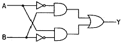
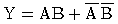
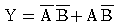
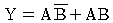
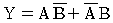
(정답률: 65%)
44. 데이터 단위가 8비트인 메모리에서 용량이 64Kbyte 인 경우의 어드레스 핀의 개수는?
- 12개
- 14개
- 16개
- 18개
(정답률: 60%)
45. 4×2 RAM을 이용하여 16×4 메모리를 구성하고자 할 경우에 필요한 4×2 RAM의 수는?
- 4개
- 8개
- 16개
- 32개
(정답률: 61%)
46. 하드웨어 신호에 의하여 특정번지의 서브루틴을 수행하는 것은?
- vectored interrupt
- handshaking mode
- subroutine call
- DMA 방식
(정답률: 53%)
47. 64Kbyte인 주소 공간(address space)과 4Kbyte인 기억 공간(memory space)을 가진 컴퓨터의 경우 한 페이지(page)가 512Kbyte로 구성되었다면 페이지와 블록 수는 각각 얼마인가?
- 16페이지, 12블록
- 128페이지, 8블록
- 256페이지, 16블록
- 64페이지, 4블록
(정답률: 50%)
48. 다중처리기 시스템의 상호연결구조 방식이 아닌 것은?
- 코드분할 스위치
- 공유버스
- 크로스바 스위치
- 다단계상호연결망
(정답률: 30%)
49. 캐시의 쓰기 정책 중 write-through 방식의 단점은?
- 쓰기 동작에 걸리는 시간이 길다.
- 읽기 동작에 걸리는 시간이 길다.
- 하드웨어가 복잡하다.
- 주기억장치의 내용이 무효상태인 경우가 있다.
(정답률: 50%)
50. 인터럽트의 요청이 있을 경우에 처리하는 내용 중 가장 관계가 적은 것은?
- 중앙처리장치는 인터럽트를 요구한 장치를 확인하기 위하여 입출력장치를 폴링한다.
- PSW(Program Status Word)에 현재의 상태를 보관한다.
- 인터럽트 서비스 프로그램은 실행하는 중간에는 다른 인터럽트를 처리할 수 없다.
- 인터럽트를 요구한 장치를 위한 인터럽트 서비스 프로그램을 실행한다.
(정답률: 56%)
51. 가상기억장치에 대한 설명으로 틀린 것은?
- 가상기억장치의 목적은 보조기억장치를 주기억장치처럼 사용하는 것이다.
- 처리속도가 CPU 속도와 비슷하다.
- 소프트웨어적인 방법이다.
- 주기억장치의 이용률과 다중 프로그래밍의 효율을 높일 수 있다.
(정답률: 62%)
52. RISC 프로세서의 설명으로 옳지 않은 것은?
- 인텔 계열의 거의 모든 프로세서에서 사용되고 있다.
- 축소 명령어 세트 컴퓨터의 약어이다.
- 명령어 코드로 구성하기 위한 bit 수의 증가에 대한 보완으로 개발된 프로세서 이다.
- 명령어들의 사용빈도를 조사하여 사용 빈도가 높은 명령어만 사용하는 프로세서이다.
(정답률: 45%)
53. CPU에 의해서 입출력이 일어나지 않고 별도의 입출력 제어기에 의해서 일어나는 입출력은?
- 프로그램에 의한 I/0
- 인터럽트에 의한 I/0
- DMA 제어기에 의한 I/0
- subroutine에 의한 I/0
(정답률: 63%)
54. 다중처리기를 사용하여 개선하고자 하는 주된 목표가 아닌 것은?
- 수행속도
- 신뢰성
- 유연성
- 대중성
(정답률: 51%)
55. 채널(Channel)에 대한 설명으로 옳지 않은 것은?
- DMA 와 달리 여러 개의 블록을 입출력 할 수 있다.
- 시스템의 입출력 처리 능력을 향상시키는 기능을 한다.
- 멀티플렉서 채널은 저속인 여러 장치를 동시에 제어하는데 적합하다.
- 입출력 동작을 수행하는데 있어서 CPU의 지속적인 개입이 필요하다.
(정답률: 57%)
56. 1개의 Full adder를 구성하기 위해서는 최소 몇 개의 Half adder가 필요한가?
- 1개
- 2개
- 3개
- 4개
(정답률: 56%)
57. 전체 기억장치 액세스 횟수가 50이고, 원하는 데이터가 캐시에 있는 횟수가 45라고 할 때, 캐시의 미스율(miss ratio)_은?
- 0.9
- 0.8
- 0.2
- 0.1
(정답률: 58%)
58. 2의 보수를 사용하여 음수를 표현할 때의 설명으로 옳은 것은?
- 0 은 두 가지로 표현된다.
- 보수를 구하기가 쉽다.
- 보수를 이용한 연산 과정 중 end around carry 과정이 있다.
- 음수의 최대 절대치가 양수의 최대 절대치 보다 1만큼 크다.
(정답률: 53%)
59. 8비트로 -9를 부호와 2의 보수(signed-2's complement)로 표현한 것은?
- 10001001
- 11111001
- 11110110
- 11110111
(정답률: 47%)
60. 하드와이어 제어방식이 마이크로프로그램을 이용한 제어 방식보다 좋은 점은?
- 비교적 복잡한 명령어들로 구성된 시스템 구현에 적합
- 마이크로 명령어를 추가하기 위해 설계 변경이 용이
- 비교적 명령어 설계에 유연성과 자율성을 보장
- 프로그램 실행속도가 비교적 빠름
(정답률: 52%)
4과목: 운영체제
61. 프로세서의 상호 연결 구조 중 하이퍼 큐브 구조에서 프로세서의 총 개수가 65536 일 때 하나의 프로세서에 연결되는 연결점의 수는?
- 4
- 16
- 32
- 65536
(정답률: 54%)
62. 파일 시스템에 대한 설명 중 옳지 않은 것은?
- 파일(File)은 연관된 데이터들의 집합이다.
- 파일은 각각의 고유한 이름을 갖고 있다.
- 파일은 주로 주기억장치에 저장하여 사용한다.
- 사용자는 파일을 생성하고 수정하며 제거할 수 있다.
(정답률: 44%)
63. 3개의 페이지 프레임을 갖는 시스템에서 페이지 참조 순서가 1, 2, 1, 0, 4, 1, 3 일 경우 LRU(Least Recently Used) 알고리즘에 의한 페이지 대치의 최종 결과는?
- 1, 4, 3
- 1, 2, 0
- 2, 4, 3
- 0, 1, 3
(정답률: 43%)
64. 교착상태 해결 방법 중 시스템에 교착상태가 발생했는지 점검하고 교착상태에 있는 프로세스와 자원을 발견하는 것으로 자원할당 그래프 등을 사용하는 기법은?
- Prevention
- Avoidance
- Recovery
- Detection
(정답률: 49%)
65. 파일 보호 기법 중 다음 설명에 해당하는 것은?
- Naming
- Password
- Access Control
- Cryptography
(정답률: 47%)
66. 임계 영역(Critical Section)에 대한 설명으로 옳은 것은?
- 프로세스들의 상호배제(Mutual Exclusion)가 일어나지 않도록 주의해야 한다.
- 임계 영역에서 수행 중인 프로세스는 인터럽트가 가능한 상태로 만들어야 한다.
- 어느 한 시점에서 둘 이상의 프로세스가 동시에 자원 또는 데이터를 사용하도록 지정된 공유 영역을 의미한다.
- 임계 영역에서의 작업은 신속하게 이루어져야 한다.
(정답률: 48%)
67. 주기억장치 관리기법인 최초, 최적, 최악 적합기법을 각각 사용할 때, 각 방법에 대하여 10K의 프로그램이 할당되는 영역을 각 기법의 순서대로 옳게 나열한 것은? (단, 영역 1, 2, 3, 4는 모두 비어 있다고 가정한다.)
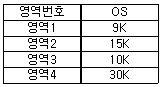
- 영역2, 영역3, 영역4
- 영역1, 영역2, 영역3
- 영역2, 영역3, 영역1
- 영역1, 영역3, 영역2
(정답률: 54%)
68. 운영체제의 기능으로 옳지 않은 것은?
- 자원 보호 기능을 제공한다.
- 시스템의 오류를 검사하고 복구한다.
- 자원의 스케줄링 기능을 제공한다.
- 사용자와 시스템 간의 인터페이스 역할을 담당하는 하드웨어 장치이다.
(정답률: 48%)
69. 파일을 삭제하는 UNIX 명령은?
- rm
- delete
- mkdir
- mv
(정답률: 52%)
70. 다중 처리기 운영체제 구조 중 주/종(Master/Slave) 처리기 시스템에 대한 설명으로 옳지 않은 것은?
- 주프로세서는 입출력과 연산 작업을 수행한다.
- 종프로세서는 운영체제를 수행한다.
- 종프로세서는 입출력 발생시 주프로세서에게 서비스를 요청한다.
- 한 처리기는 주프로세서로 지정하고 다른 처리기들은 종프로세서로 지정하는 구조이다.
(정답률: 62%)
71. 하나의 CPU는 같은 시점에서 여러 개의 작업을 동시에 수행할 수 없기 때문에 CPU의 전체 사용 기간을 작은 작업 시간량(time slice)으로 나누어서 그 시간량 동안만 번갈아 가면서 CPU를 할당하여 각 작업을 처리하는 기법은?
- 실시간 처리 시스템
- 시분할 시스템
- 다중 처리 시스템
- 일괄 처리 시스템
(정답률: 52%)
72. UNIX 파일 시스템에서 부팅시 필요한 코드를 저장하고 있는 블록은?
- 부트 블록
- 슈퍼 블록
- 데이터 블록
- I-NODE 블록
(정답률: 54%)
73. MFD와 UFD로 구성되며, MFD는 각 사용자의 이름이나 계정 번호 및 UFD를 가리키는 포인터를 갖고 있으며 UFD는 오직 한 사용자가 갖고 있는 파일들에 대한 파일 정보만 갖고 있는 디렉토리 구조는?
- 1단계 디렉토리
- 2단계 디렉토리
- 트리구조 디렉토리
- 비순환 그래프 디렉토리
(정답률: 53%)
74. 분산 운영체제에 대한 설명으로 옳지 않은 것은?
- 시스템 변경을 위한 점진적인 확대 용이성
- 고가의 하드웨어에 대한 여러 사용자들 간의 공유
- 빠른 응답시간
- 향상된 보안성
(정답률: 57%)
75. 현재 헤드 위치가 53에 있고 트랙 0번 방향으로 이동 중이다. 요청 대기 큐에는 다음과 같은 순서의 액세스 요청이 대기 중일 때, SSTF 스케줄링 알고리즘을 사용한다면 헤드의 총 이동거리는 얼마인가? (단, 트랙 0번이 가장 안쪽에 위치한다.)
- 202
- 236
- 256
- 320
(정답률: 33%)
76. UNIX 시스템에서 커널의 기능이 아닌 것은?
- 프로세스 관리
- 명령어 해석
- 기억장치 관리
- 입출력 관리
(정답률: 51%)
77. 로더의 기능 중 프로그램을 실행시키기 위하여 기억장치 내에 옮겨놓을 공간을 확보하는 기능은?
- Loading
- Relocation
- Linking
- Allocation
(정답률: 41%)
78. SJF 기법의 길고 짧은 작업 간의 불평등을 보완하기 위한 기법으로 대기 시간과 서비스 시간을 이용한 우선순위 계산 공식으로 우선순위를 정하는 스케줄링 기법은?
- Round-Robin
- FIFO
- HRN
- Multi-level Feedback Queue
(정답률: 62%)
79. 스케줄링 하고자 하는 세 작업의 도착시간과 실행시간은 다음 표와 같다. 이 작업을 SJF로 스케줄링 하였을 때, “작업번호 2”의 종료 시간은? ( 단, 여기서 오버헤드는 무시한다.)
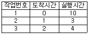
- 3
- 6
- 9
- 13
(정답률: 44%)
80. 4개의 프레임을 수용할 수 있는 주기억장치가 있으며, 초기에는 모두 비어 있다고 가정한다. 다음의 순서로 페이지 참조가 발생할 때, FIF0 페이지 교체 알고리즘을 사용할 경우 페이지 결함의 발생 횟수는?
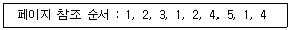
- 4회
- 5회
- 6회
- 7회
(정답률: 52%)
5과목: 마이크로 전자계산기
81. 8085 마이크로프로세서에서 주소와 데이터를 분리하기 위해 필요한 신호는?
- ALE(Address Latch Enable) 신호
- /WR 신호
- /RE 신호
- IO/M 신호
(정답률: 49%)
82. 동기형 계수기로 사용할 수 없는 것은?
- 링 카운트
- BCD 카운트
- 2진 카운트
- 2진 업다운 카운트
(정답률: 51%)
83. 일반적으로 DMA 장치가 가지는 3개의 레지스터가 아닌 것은?
- 주소 레지스터
- 워드 카운터 레지스터
- 제어 레지스터
- 인터럽트 레지스터
(정답률: 33%)
84. 비동기(Asynchronous) 직렬(Serial) 입출력 인터페이스를 올바르게 설명한 것은?
- 데이터를 block으로 묶어서 전송하는 방식이다.
- 변복조장치(MODEM)를 사용한 장거리 데이터 전송은 불가능하다.
- 단위 데이터의 전후에 스타트(start) 신호와 스톱(stop) 신호가 필요하다.
- 고속 데이터 전송이 필요한 입출력 장치의 인터페이스에 적합하다.
(정답률: 65%)
85. 주기억 장치와 입출력 장치 사이의 전송 속도차를 극복하기 위해 데이터를 임시저장 하는 장소는?
- 보조기억 장치
- 레지스터
- 인터페이스
- 버퍼
(정답률: 58%)
86. 마이크로프로세서에서 데이터가 저장된 또는 저장될 기억장치의 장소를 지정하기 위해 사용하는 버스(bus)는?
- 레지스터 연결 버스
- 데이터 버스
- 주소 버스
- 제어 버스
(정답률: 49%)
87. 다음 용어 중 데이터가 전송되는 속도를 나타내는 것은?
- 보 레이트(baud rate)
- 듀티 팩터(duty factor)
- 클록 레이트(clock rate)
- 스케일 팩터(scale factor)
(정답률: 59%)
88. 동기 또는 비동기식으로 마이크로프로세서 간의 원거리 통신을 하려고 한다. 이 때 필요하지 않은 장치는?
- MODEM
- RS232 Driver/receiver
- SIO
- PIO
(정답률: 39%)
89. 프로그램을 작성하여 기계어 번역시 또는 실행시 문법적 오류나 논리적 오류를 바로 잡는 과정을 무엇이라 하는가?
- Assembly
- Loading
- Debugging
- Editing
(정답률: 70%)
90. 스택에 관한 설명으로 틀린 것은?
- 스택은 메모리에만 존재한다.
- 스택에서 읽을 때는 pop 명령을 사용한다.
- 마이크로프로세서에서 스택은 인터럽트와 관련이 깊다.
- 스택은 LIFO 메모리 장치이다.
(정답률: 50%)
91. 우선순위체제 인터럽트 방식에서의 우선순위 식별회로에서 우선순위가 가장 높은 인터럽트 요청신호는?
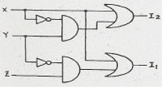
- X
- Y
- Z
- 구별할 수 없다.
(정답률: 48%)
92. 다음 중 단일 칩 마이크로컴퓨터에 해당하는 것은?
- Intel 8080
- Zilog Z80
- Intel 8048
- Motorola MC6800
(정답률: 47%)
93. CMOS RAM의 설명 중 옳지 않은 것은?
- 상보성 금속 산화막 반도체 제조 공법을 사용한다.
- 전원으로부터의 잡음에 대한 허용도가 높다.
- 전력 소비량이 높다.
- 건전지로 전원이 공급되는 하드웨어 구성 요소에 유용하게 사용된다.
(정답률: 55%)
94. 전체 CPU를 하나의 단일 IC로 하면 장점도 있으나 프로세서의 구조가 고정되며, 명령어 집합도 바꿀 수 없게 된다. 이러한 단점을 보완하기 위하여 CPU를 processor Unit, Microprogram Sequencer, Control Memory로 나누어 구성하면 위 단점을 제거할 수 있다. 이런 구조로 된 프로세서를 무엇이라 하는가?
- vector processor
- bit slice microprocessor
- pipeline processor
- array processor
(정답률: 49%)
95. TTL 출력 종류 중 논리값이 0도 아니고 1도 아닌 고임피던스 상태를 가지며, 특히 bus 구조에 적합한 것은?
- Tri-state 출력
- Open collector 출력
- Totem-pole 출력
- TTL 표준출력
(정답률: 43%)
96. 마이크로컴퓨터 시스템과 외부회로 사이의 데이터 전달 입출력(I/O) 방식이 아닌 것은?
- programed I/O
- interrupt I/O
- DMA(Direct Memory Access)
- paged I/O
(정답률: 45%)
97. [그림]과 같은 어느 프로그램 중 0123 번지에 CALL A 명령이 있다. 이 CALL A를 수행한 PC에 기억된 값은? (단, 모든 명령문은 1 바이크라 한다.)
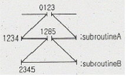
- 0124
- 1234
- 1285
- 2345
(정답률: 43%)
98. 다음 중 누산기가 꼭 필요한 명령 형식은?
- 0-주소 인스트럭션
- 1-주소 인스트럭션
- 2-주소 인스트럭션
- 3-주소 인스트럭션
(정답률: 54%)
99. 8085 CPU에서 클록은 2.5MHz 이다. LDA 명령을 수행하는데 13개 T 스테이트가 필요하다. 이 때 명령 사이클은 약 몇 ㎲ 인가?
- 13
- 5.2
- 2.5
- 3.2
(정답률: 51%)
100. 다음은 마이크로프로세서와 주변 장치 사이의 입출력 방법들이다. CPU의 부담이 적은 것부터 나열한 것은?
- 채널에 의한 입출력 - 프로그램에 의한 입출력 - DMA에 의한 입출력
- 프로그램에 의한 입출력 - DMA에 의한 입출력 - 채널에 의한 입출력
- DMA에 의한 입출력 - 프로그램에 의한 입출력 - 프로그램에 의한 입출력
- 채널에 의한 입출력 - DMA에 의한 입출력 - 프로그램에 의한 입출력
(정답률: 43%)